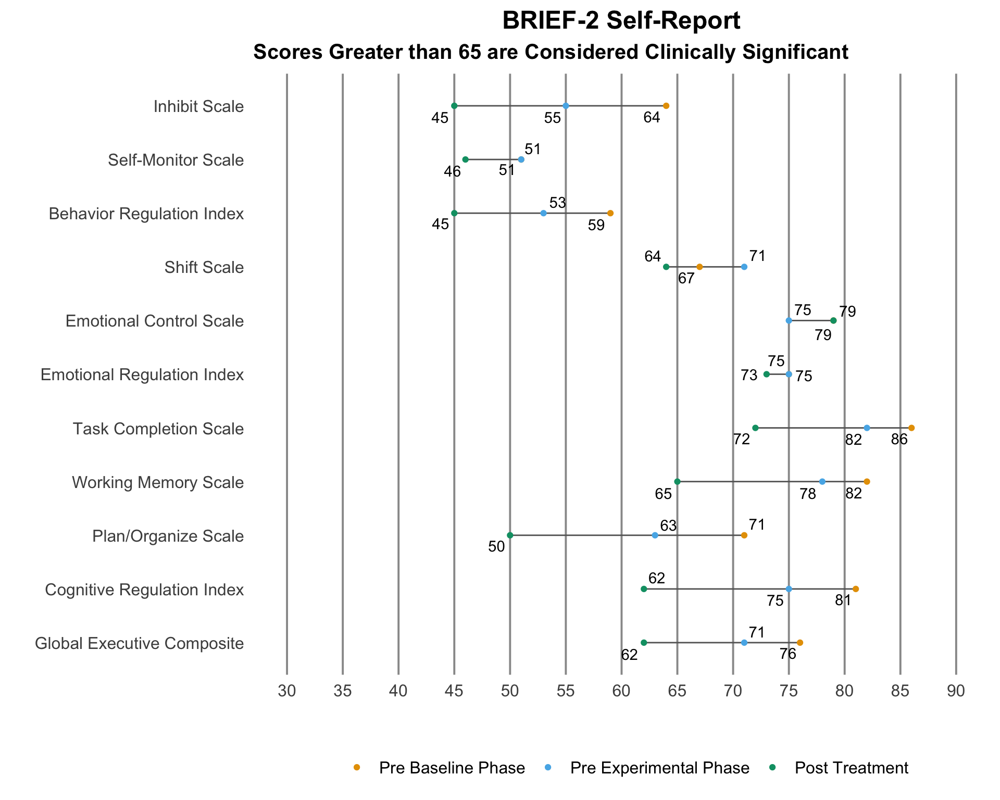
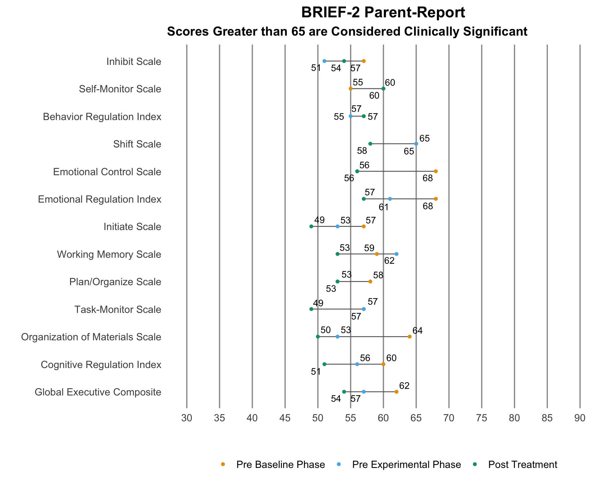
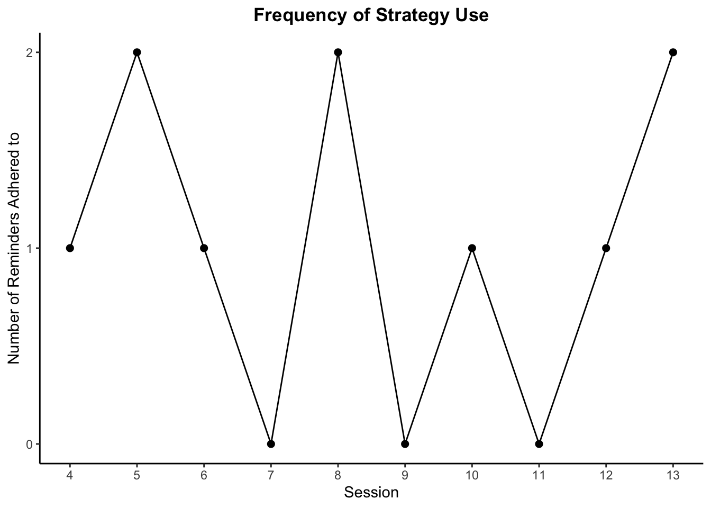
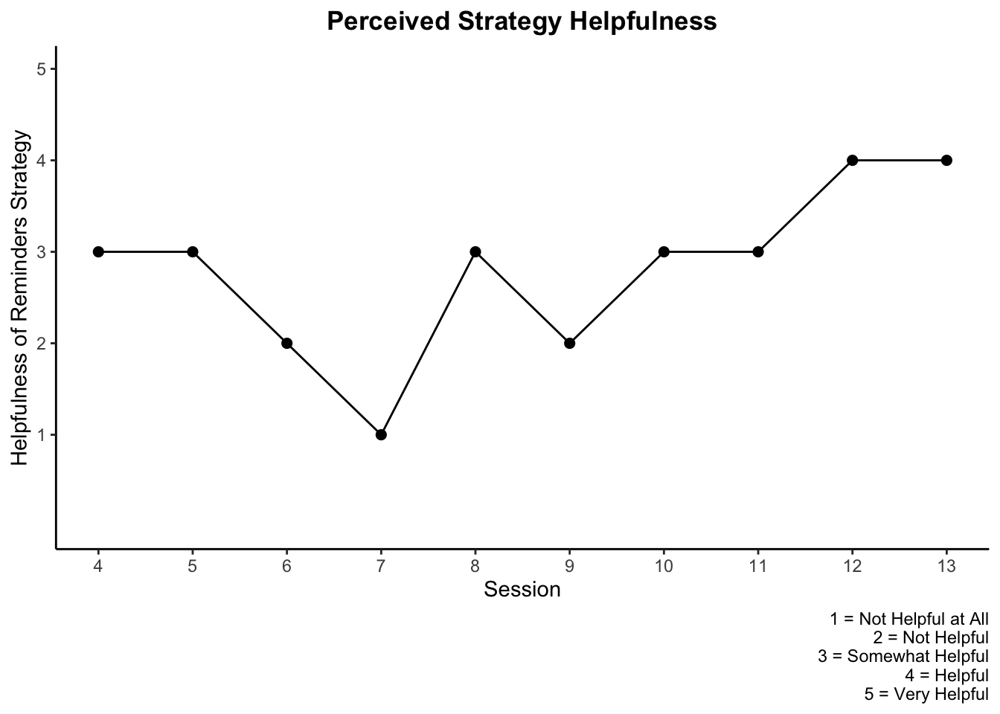

Participant 2
Demographic Information
| Participant Demographics | |||
|---|---|---|---|
| Sex | Age | Prior Concussions | History of Depression or Anxiety |
| Female | 15 | 1 | Yes |
Outcome Measurements
GAS Hierarchy - Number of minutes per week spent studying for Spanish class
BRIEF-2
Self-report responses that guided treatment at time of pre-baseline data collection:
- Task Completion Scale
- Plan/Organize Scale
- Cognitive Regulation Index
The only elevated scores from the parent-report pre-baseline were the Shift Scale, Emotional Control Scale, and Emotional Regulation Index
BRIEF-2 Self-Report

BRIEF-2 Self-Report Table Version 1
BRIEF-2 Self-Report Table Version 2
BRIEF-2 Parent-Report

BRIEF-2 Parent-Report Table Version 1
BRIEF-2 Parent-Report Table Version 2
CLASS
Self-report responses that guided treatment at time of pre-baseline data collection:
- Difficulty taking notes
- Difficulty understanding new material
- Difficulty studying for tests or quizzes
Parent-report responses that guided treatment at time of pre-baseline data collection:
- Difficulty taking notes
- Trouble remembering what was studied
CLASS Self 1
CLASS Self 2
CLASS Self Table
CLASS Parent 1

CLASS parent 2
ClASS Parent Table
PCSS
Pre-baseline symptom severity levels that guided treatment selection:
- Difficulty concentrating
- Difficulty remembering
- Cognitive symptom cluster
All Scores
Symptom Scores
Total and Cluster Scores
Repeated Measurements
Status Tracking Measurement
Repeated Strategy Measurements
Cognitive Strategy: Use of the reminders app to set specific times throughout the week to dedicate to studying for Spanish class.
- Participant will adhere to the two set reminders per week.
Cognitive Strategy identified during session 11 to be measured sessions 12 and 13: have an accountability partner to study with for a desired amount of time.
Frequency of Use of Reminders App Strategy

Perceived Helpfulness of Reminders App Strategy

Frequency of Use of Accountability Partner Strategy
Perceived Helpfulness of Accountability Partner Strategy
Treatment Implementation Measurements
TARF
The TARF is used to measure social validity.
Treatment Compliance
Participant 2 did not cancel or reschedule any sessions.